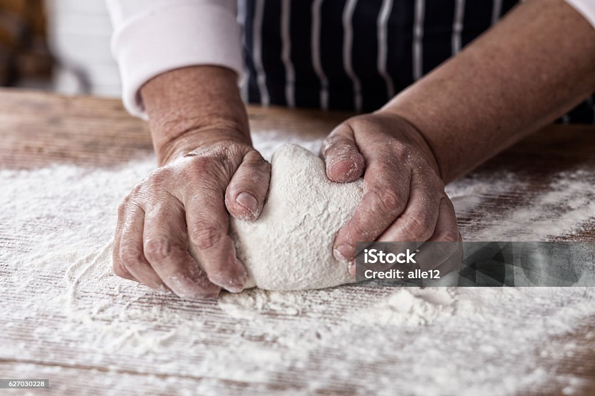

Pizza Dough
A simple and handy pizza dough recipe


Ingredients
- 3 dl cold water
- 1/3 package of yeast (1/4 package corresponds to approx. 12 g)
- 2 teaspoons of sugar
- 2 tbsp olive oil
- 1 1/2 teaspoons salt
- 7 - 7 1/2 dl wheat flour (7 1/2 dl corresponds to approx. 450 g)
- wheat flour for baking
Instructions
- Crumble the yeast in a large bowl.
- Add water, sugar, oil and salt.
- Stir until the yeast has dissolved.
- Add the flour a little at a time and work the dough for 5–10 minutes by hand.
- Cover the bowl with a baking sheet or plastic wrap and let the dough rise in the fridge for 12–24 hours.